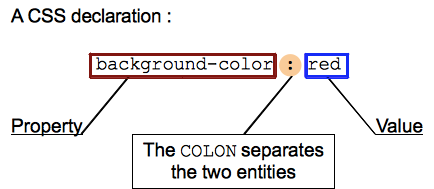

INTRODUÇÃO AO CSS
O CSS descreve como os elementos HTML devem ser exibidos.
Como o CSS afeta o HTML?
Navegadores aplicam regras CSS a documentos para alterar como estes são exibidos. Uma regra CSS é forma de:
Um conjunto de properties, dos quais possuem valores definidos para atualizer como o conteúdo da página HTML é exibido, por exemplo Quero que o tamanho de meus elementos seja 50% o de seu elemento pai, e que seu background seja vermelho.
Um selector, o qual seleciona o(s) elemento(s) ao qual você quer aplicar os valores das propriedades. Por exemplo, Quero aplicar minha regra CSS a todos os parágrados em meu documento HTML.

Diferentes tipos de seletores
Seletores podem ser divididos nas seguintes categorias:
- Seletores simples : Combinar um ou mais elementos com base no tipo de elemento, class ou id.
- Seletores de atributo : Combinar um ou mais elementos com base em seus atributos / valores de atributos.
- Pseudo-classes : Combinar um ou mais elementos que existem em um determinado estado, como um elemento que está sendo pairado sobre ponteiro do mouse, ou uma caixa de seleção que está atualmente nã selecionada ou selecionada, ou um elemento que é o primeiro filho de seu pai na árvore DOM.
- Pseudo-elementos : Combinar uma ou mais partes do conteúdo que estão em uma determinada posição em relação a um elemento, por exemplo, a primeira palavra de cada parágrafo ou conteúdo gerado pouco antes de um elemento.
- Combinadores : Estas não são exatamente seletores si, mas formas de combinar dois ou mais seletores em formas úteis para as seleções muito específicas. Assim, por exemplo, você pode selecionar apenas os parágrafos que são descendentes diretos de divs ou parágrafos que vêm diretamente após os cabeçalhos.
- Vários seletores : Mais uma vez, estes não são seletores separados; a idéia é que você pode colocar vários seletores na mesma regra CSS, separados por vírgulas, para aplicar um único conjunto de declarações a todos os elementos selecionados por esses seletores.
Um rápido exemplo de CSS
A descrição acima pode ter feito sentido ou não para você, então vamos garantir que as coisas estão claras mostrando um rápido exemplo.
Antes de mais nada, vejamos um documento HTML simples, contendo um <h1> e um <p>perceba que a folha de estilo é aplicada ao HTML utilizando um elemento <link>
Um conjunto de regras CSS contidos em uma folha de estilos detemina como uma página da web deve parecer. Você irá aprender muito mais sobre como a sintaxe CSS parece no próxim artigo do módulo — Sintaxe CSS.
Declarações CSS
Definição de propriedades CSS para valores específicos é a função central da linguagem CSS. O motor CSS calcula que as declarações se aplicam a cada elemento de uma página, a fim de posicionar e estilizar adequadamente. O que é importante lembrar é que propriedades e valores são case-sensitive em CSS. A propriedade e o valor estão separados por dois pontos
Existem mais de 300 diferentes propriedades em CSS e quase um número infinito de diferentes valores. Nem todos os pares de propriedades e valores são permitidos; cada propriedade tem uma lista específica de valores válidos definidos para ele.
Exemplos de propriedades
Blocos de declaração CSS
Declarações são agrupados em blocos, com cada conjunto de declarações será envolto por chaves, { }.
Cada declaração contida no interior de um bloco de declaração tem que ser separado por um ponto e vírgula ( ;), caso contrário, o código não irá funcionar (resultados inesperados vão acontecer.) A última declaração de um bloco não necessita de ser terminada pela um ponto e vírgula, embora seja muitas vezes considerado um bom estilo.